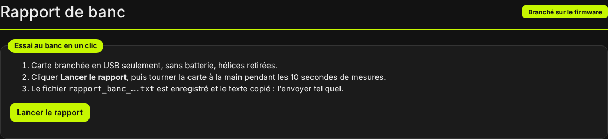
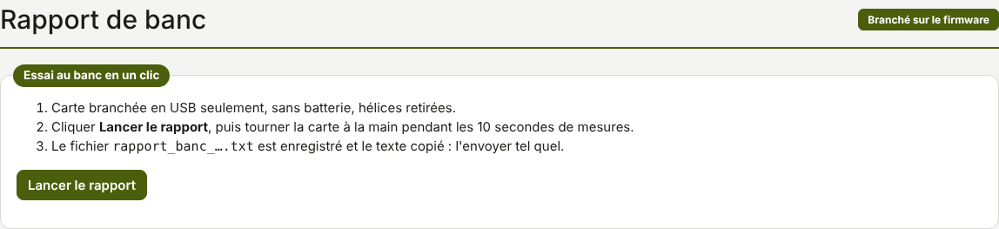

TRUEGLIDE
TRUEGLIDE Rapport de banc
L'onglet Rapport de banc (groupe Outils) enregistre en un clic l'état complet de la carte dans un fichier texte, à envoyer tel quel pour un diagnostic. C'est le premier réflexe quand quelque chose ne va pas au banc.


Faire un rapport
- Carte branchée en USB seulement, sans batterie, hélices retirées.
- Cliquer Lancer le rapport, puis tourner la carte à la main dans tous les sens pendant les 10 secondes de mesures.
- Le fichier
rapport_banc_<date>.txtest enregistré et son texte est copié : l'envoyer tel quel, sans le retoucher.
Ce qu'il contient
- Date, navigateur, port USB et compteurs de la liaison (octets reçus, dernier octet reçu).
- Les réponses de la carte à
versionetstatus(voir Ligne de commande), au début et à la fin. - 20 relevés du gyroscope pris pendant que la carte est tournée à la main : ils montrent si le capteur répond sur les trois axes.
Le rapport ne contient que ce que la carte répond à ces commandes et l'état de la liaison USB.
Carte qui ne répond pas
Si la carte ne répond à aucune commande, le rapport le dit en tête (« LA CARTE NE RÉPOND PAS AUX COMMANDES ») et ajoute les 200 derniers octets reçus en hexadécimal. Le fichier est enregistré quand même : c'est justement le cas où il est le plus utile.